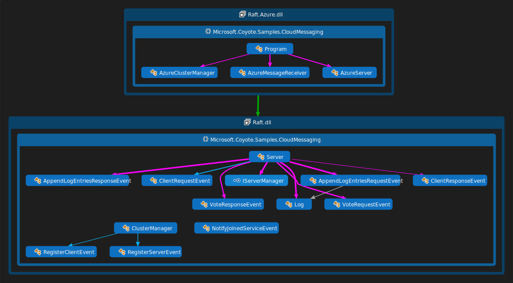
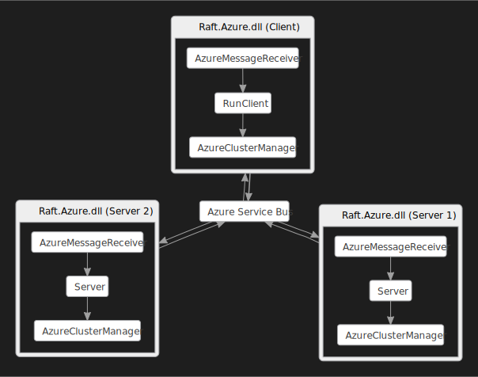
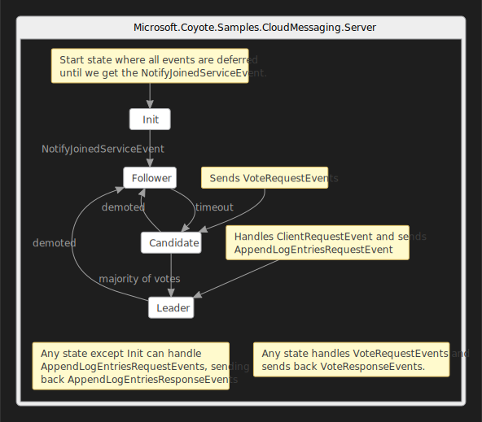

Raft consensus protocol on Azure
The CloudMessaging sample implements the Raft consensus algorithm as an Azure Service built on the Azure Service Bus. See animating state machine demo which shows the Coyote systematic testing process in action on this application.
This example is organized into the following projects:
- Raft - a .NET Core C# class library that implements the Raft Consensus Algorithm using the Coyote Actor Programming Model.
- Raft.Azure - a C# executable that shows how to run Coyote messages through an Azure Service Bus.
- Raft.Mocking - demonstrates how to use mocks to systematically test the CloudMessaging sample application, in-memory on your local machine without using any Azure messaging, discussed in more detail in Raft actor service (mocked) tutorial.
- Raft.Nondeterminism - demonstrates how to introduce controlled nondeterminism in your Coyote tests to systematically exercise corner-cases.
What you will need
To run the Azure example, you will need an Azure
subscription. You will also need to install the Azure
Command-line
tool. This tool
is called the Azure CLI.
You will also need to:
- Install Visual Studio 2022.
- Install the .NET 8.0 version of the coyote tool.
- Be familiar with the
coyotetool. See using Coyote. - Clone the Coyote git repo.
Setup Azure
- Open a Developer Command Prompt for Visual Studio 2022.
- Run
powershell -f setup.ps1to create a new Azure Resource Group calledCoyoteSamplesRGand an Azure Service Bus namespace calledCoyoteSampleMessageBus.
This script will provide the connection string you need so the sample can connect to the Azure
Service Bus. Copy the command line from the output of setup.ps1 and paste it into your console
window:
set CONNECTION_STRING=...
If you need to find this connection string again later you can get it from your Azure
Portal, find the message bus resource you created above, click on Shared
access policies and select the RootManageSharedAccessKey and wait for the keys to load, then copy
the contents of the field named Primary Connection String.
Build the sample
You can build the sample by following the instructions here.
Run the Raft.Azure application
Now you can run the Raft.Azure application:
"./Samples/bin/net8.0/Raft.Azure.exe" --connection-string "%CONNECTION_STRING%" --topic-name rafttopic --num-requests 5 --local-cluster-size 5
Note: you don’t want to try and run Raft.Azure client using the coyote test tool until you
complete the mocking of the Azure Message Bus calls.
Design
The Raft.dll library contains a Server state
machine, and a ClusterManager state machine. It also
contains an interface named IServerManager and some Coyote Event declarations which describe the
message types that are sent between the Server instances and the Client.

The ClusterManager is an abstract state machine that models the concept of being able to broadcast
messages to all Servers registered in a cluster. Sending an event to this cluster will result in
all Servers getting that same event. So, as the raft protocol requires, broadcasting
VoteRequestEvents can be done by a Server using this SendEvent instruction:
this.SendEvent(this.ClusterManager, new VoteRequestEvent(this.CurrentTerm, this.Manager.ServerId, lastLogIndex, lastLogTerm));
You will see similar calls sending VoteResponseEvent, AppendLogEntriesRequestEvent,
AppendLogEntriesResponseEvent, and ClientResponseEvent via the ClusterManager.
The second project builds Raft.Azure.dll and contains all the Azure specific code that hooks all
this up to an Azure Service Bus. Notice it implements the IServerManager interface in a class
named AzureServer and it subclasses the ClusterManager in a state machine named
AzureClusterManager. This subclass achieves the required broadcast semantics by forwarding all
events received to an Azure Service Bus pub/sub topic. It also has an AzureMessageReceiver class
which subscribes to the Azure service bus topic, and forwards those events back into the local
Coyote state machine using SendEvent. You can think of AzureClusterManager and
AzureMessageReceiver as an example of how to “bridge” an external messaging platform with the
Coyote runtime. In this way you can map Coyote Actors to any underlying messaging platform which is
why Coyote does not force you to use any particular message platform.
Initialization
When you run the Raft.Azure.dll command line you will see some options:
| Option | Description |
|---|---|
--connection-string |
your Azure Service Bus connection string |
--topic-name |
optional string for Service Bus Topic (default ‘rafttopic’) |
--num-servers |
number of servers to spawn |
As you can see here Raft.Azure.dll will launch each server in a separate process. The first
process is the Client process, then each subsequent one is a Server instance according to the
specified --local-cluster-size command line argument. The following diagram shows what this looks
like when we have 2 servers in the cluster:

The startup sequence for all this can be found in Program.cs and goes like this:
- Parse the command line for the client process and call
RunAsync. RunAsyncsets up the Azure Service Bus pub/sub topic usingCreateTopicAsync, and creates a subscription to that topic usingCreateSubscriptionAsync. Each process does this same thing so they can all talk to each other via the Azure Service Bus using theTopicClient.- Create the Coyote
IActorRuntimeusingRuntimeFactory.Create. - The
TopicClientis then wrapped by the first Coyote Actor calledAzureClusterManager. - Then depending which process is running it calls
RunClientorRunServer. RunClientlaunches the server processes inStartRaftServersand special hidden command line arguments--server-idand--client-process-idtell those child processes to run in server mode.RunClientcreates anAzureMessageReceiver, and sends a sequence ofClientRequestEvents, waiting for a response from the cluster for each request.RunServercreates theAzureServerobject and anAzureMessageReceiver, telling theAzureMessageReceiverto run forever asynchronously. Each server terminates when the client terminates which is done byMonitorClientProcess. TheAzureServerobject creates aStateMachineof typeServer. Note:MonitorClientProcessdoesn’t work when you run the project from Visual Studio debugger, in that case you may have to kill the spawneddotnetprocesses by hand.
Processing
The Server state machine is where the interesting code lives, it is a complete implementation of
the Raft protocol. All the Server instances form a fault-tolerant server cluster, that can
handle ClientRequestEvents in a reliable way. Server instances can failover, and the cluster
protocol is able to figure out which server should handle which client request, and how to replicate
the logs across all servers for safe keeping and reliability. The whole idea is that with this
cluster there is no single point of failure. Clearly for this to be reliable, it must also be bug
free, and therefore is an excellent candidate for thorough testing by the coyote test tool.
The RunClient method shows how you can use the cluster, namely, sending a ClientRequestEvent
and waiting for the async response that comes back from the service bus in the
ClientResponseEvent. Sending a message to the cluster is done like this:
runtime.SendEvent(clusterManager, new ClientRequestEvent(command));
Receiving a response is done using the ResponseReceived event on the AzureMessageReceiver. The
client then uses a TaskCompletionSource to synchronize these two events so that it waits for a
ClientResponseEvent before sending the next ClientRequestEvent.
Each ClientRequestEvent goes to all server processes in the cluster via the Azure Service Bus. The
servers then implement their Raft voting protocol to figure out which server will handle the
request. The sample runs each Server on the same machine, just for simplicity, but in a real
fault-tolerant system you would probably want to run each server on a different VM in the cloud and
get a real distributed cluster going. You could use Kubernetes or some other system to manage that
setup. The Azure Service Bus code would be the same in either case.
The AzureServer code is a bit more complicated than you might expect, where it uses
CreateActorIdFromName, then a Initialize method to create the Server state machines and a
Start that sends a NotifyJoinedServiceEvent to kick things off. The reason for all this will
become more apparent when you look at the mocked implementation. In the mocking
case all Server state machines run in the same process and in that case the servers must not start
until all server instances have been created. This is an example of how the issue of testability can
sometimes affect how you do things in your production code.
CreateActorIdFromName creates only the ActorId object and does not actually create the actor.
This is handy when you need to give that ActorId to another Actor as part of an initialization
process. Then at a later time when everything is ready we can create the actual actor using this
predetermined id as follows:
this.Runtime.CreateActor(id, typeof(Server), new Server.SetupServerEvent(this, this.ClusterManager));
Notice the Server when it is in the start state (Init), it defers all events using a special
wild card:
[DeferEvents(typeof(WildCardEvent))]
Then only when NotifyJoinedServiceEvent arrives does it go to the Follower state where the raft
protocol begins and any queued messages can be processed.
This tutorial does not go into the gory details of the entire Server protocol implementation, but
there is a great animation of how the Raft Protocol works on this
website. Please check that out, as it will make the Server code easier
to understand. This more detailed walkthrough of the
protocol can also help make things even more clear.
The overall Server state machine flow looks like this:

In a nutshell, each Server instance can be in one of three states, Follower, Candidate or
Leader. Each Server starts in the Follower state. If these followers don’t hear from a leader
in a small timeout period then they promote themselves to Candidate state where each candidate
requests a vote from the other servers in the cluster using the VoteRequestEvent. The other
servers figure out how to reply to those votes, either accepting or denying the request sending back
a corresponding VoteResponseEvent. A Candidate then becomes a Leader if it gets affirmative
votes from a majority of the Server nodes in the cluster. A Leader then appends a new entry to
the distributed log by sending an AppendLogEntriesRequestEvent to the other servers in the
cluster. A AppendLogEntriesResponseEvent is returned in response to that which includes a success
indicator. Now there are more details to this, like what happens if two servers get a majority vote
or if a AppendLogEntriesRequestEvent fails for some reason. The cluster does some clever book
keeping using a type of version number called “Term” where in some cases an elected Leader can be
rolled back to Follower enabling a new election process to continue and so on.
Note: a real application of this protocol could be deployed where you simply add new [DataMember]
fields to each ClientRequestEvent. These serializable members will be automatically replicated
across the Servers and you implement whatever server logic you need at the point in the Server
state machine where new log entries are about to be committed, if the server logic succeeds the
Coyote commit continues, otherwise it is rolled back.
Summary
In this tutorial you learned:
- How to hook Coyote
ActorsandStateMachinesup to a real production ready messaging platform (like Azure Service Bus). - What it looks like to implement a real production ready algorithm like Raft in a Coyote
StateMachine. - How the Coyote
StateMachinedeclarations embedded in the code show that high level state machine design can be continually maintained in your code, and this way Coyote is ensuring design and implementation remain in sync over time. - How to reserve an
ActorIdbefore creating anActorusingCreateActorIdFromName. - How to generate visualizations of execution traces by registering the
ActorRuntimeLogGraphBuilder.
Now you need to be sure this Server protocol implementation is trustworthy, and for that you can
move on to the next tutorial: Raft actor service (mocked).